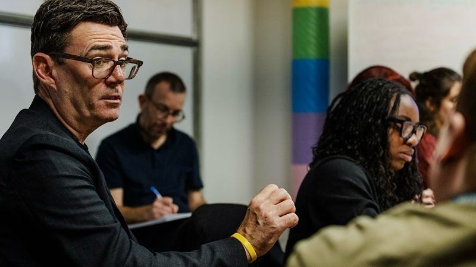

About Seun
Young leader. Advocate. Mentor.
Championing youth empowerment, gender equality and social impact, with a particular interest in Africa’s development and the role of diaspora engagement.
- First-Class Graduate
- UN Women UK
- Pan-African Youth Parliament
- Theirworld Ambassador
Biography
Seun’s story
Oluseun (Seun) Odusanya is an award winning, British-Nigerian young leader and international speaker who is deeply passionate about youth empowerment, gender equality and creating social impact both locally and globally. She holds a First-Class degree in Management, Politics and International Relations from Lancaster University (2017–2021), including a year in industry.
Seun works in local government in Greater Manchester, where she has supported the Mayor in delivering community engagement and participation, using data, intelligence and insights to inform communications and policy. She now contributes to initiatives supporting children and young people across Greater Manchester.

Seun advances change through a combination of international advocacy and community initiatives. She is a Community Member of UN Women UK, represents Nigeria in the Pan-African Youth Parliament and is a Theirworld Global Ambassador, collaborating with a network of advocates to drive change through action. She is also an active member of the Common Futures Conversations community at Chatham House, working with other young people from around the world to discuss policy ideas and engage with policymakers. Alongside this, she volunteers as a King’s Trust Youth Mentor, supporting secondary school students across Greater Manchester to build confidence and achieve their aspirations.
A key part of Seun’s leadership is using her connection to the diaspora to create lasting social impact. Growing up in the UK while remaining deeply invested in Nigeria has shaped her sense of responsibility to use her opportunities and networks to make a difference. Over the years, this has included raising funds to support an orphanage, tackling environmental challenges through beach clean-up initiatives and participating in community outreach to support vulnerable communities. Seun’s long-term ambition is to advance the economic empowerment of women and young people in Nigeria.
In recognition of her leadership potential across her academic, professional and volunteering experiences, she was named one of the most outstanding Black university students in Britain, and recently recognised as a finalist on two separate occasions for her achievement, dedication and contribution inspiring future generations.
Areas of interest
What she works on
Youth Empowerment
Seun is passionate about creating opportunities for the next generation of young people to develop their potential, build confidence and shape their futures. Through her professional work, mentoring and international advocacy, she champions youth empowerment both locally and globally.
Work with her →Gender Equality
Seun is passionate about championing gender equality, empowering women and girls, and ensuring they have the opportunities and support to reach their full potential. She brings this commitment to life through charitable initiatives and community projects.
Her projects →Diaspora Engagement
Her experiences as a British-Nigerian woman, growing up in the UK while remaining deeply invested in Nigeria, have shaped her sense of responsibility to use her opportunities and networks to make a difference. At 16 she organised a cake sale at her local church in Manchester, raising more than double her target to support an orphanage in Lagos.
Read more →Social Impact
Seun is keen to deepen her understanding of how organisations can make a positive difference in society and create lasting social impact. She has explored this through participating in various voluntary initiatives.
Read more →Associated organisations
- UN Women UKCommunity Member
- King’s TrustYouth Mentor
- Pan-African Youth ParliamentYouth Representative
- TheirworldGlobal Ambassador